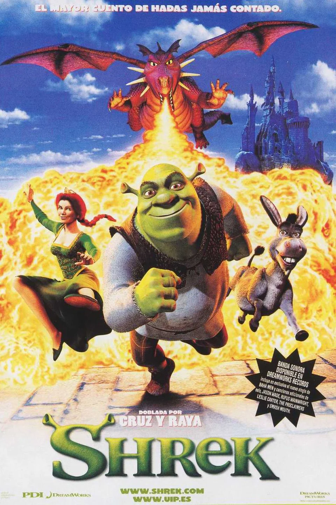

Shrek es un ogro verde y solitario que vive felizmente aislado en su pantano. Su paz es interrumpida cuando el malvado Lord Farquaad de Duloc destierra a todas las criaturas de cuentos de hadas a la propiedad de Shrek. Para recuperar su soledad, Shrek hace un trato con Farquaad: rescatará a la Princesa Fiona, quien está cautiva en un castillo vigilado por un dragón, para que Farquaad se case con ella y se convierta en rey. Acompañado por el parlanchín Burro (Donkey), Shrek se embarca en la misión. Rescatan a Fiona, pero durante el viaje de regreso, Shrek y Fiona se enamoran. Sin embargo, Shrek descubre que Fiona esconde un secreto mágico: al caer la noche, se transforma en una ogra. Shrek debe llegar a la boda de Fiona y Farquaad a tiempo para confesar sus sentimientos y detener el matrimonio, demostrando que la verdadera belleza va más allá de las apariencias.